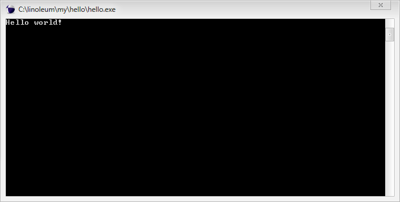

Autor: Krzysztof Śmiałek. Ten poradnik stanowi element projektu zaliczeniowego z przedmiotu Asemblery. 
L.in.oleum
Połącz wydajność asemblera z prostotą języków wysokopoziomowych.
Wstęp
Czym jest L.in.oleum?
L.in.oleum - lub w skrócie Lino - jest przenośnym asemblerem stworzonym z zamysłem pisania aplikacji ogólnego użytku w sytuacjach, gdzie potrzebna jest pełna przenośność i wysoka wydajność.
Sam autor opisuje go jako "niestrukturalny, nietypowany, proceduralny język programowania".
Język został stworzony na własne potrzeby autora. Chciał on, by piąta część jego gry Noctis powstała w języku niskopoziomowym, ale równocześnie wolał uniknąć użycia klasycznego asemblera ze względu na stosunkowo duży nakład pracy w stosunku do uzyskiwanych rezultatów.
Obecnie Lino jest językiem samowystarczalnym: kompilator (początkowo stworzony w C++) został przepisany w Lino i stanowi część biblioteki standardowej języka. Oznacza to, że możliwe jest wbudowywanie kompilatora we własne programy.
Większość elementów języka stanowi wolne oprogramowanie i jest dostępna na licencji GNU LGPL. Wyjątkiem jest kompilator, w którego licencji uchylono możliwość użytku komercyjnego.
Pakiet umożliwiający rozpoczęcie programowania w L.in.oleum można pobrać ze strony autora. W momencie pisania tego poradnika najnowsza dostępna wersja Lino to 2.00 i to właśnie jej będzie dotyczył poradnik.
Czemu powinieneś nauczyć się programować w Lino?
Nie będę Cię oszukiwał - L.in.oleum nie jest językiem, w którym tworzy się wielkie, zmieniające oblicze świata programy, lub który zapewni Ci dobrze płatną pracę w przyszłości. Jednak nauczenie się go nie będzie stratą czasu.
Lino jest językiem nietuzinkowym, z wieloma ciekawymi rozwiązaniami, które poszerzą Twoje horyzonty oraz być może zmienią sposób, w jaki patrzysz na niektóre aspekty programowania. Ucząc się go poznasz kilka faktów na temat budowy i zasady działania procesora w Twoim komputerze. Będziesz miał okazję dowiedzieć się, jak działają kompilatory i jakie są różnice w budowie języka przenośnego i nieprzenośnego.
Równocześnie nauczysz się języka, który jest niezwykle czytelny, choć nie przypomina żadnego języka, który już znasz.
Jeszcze nie jesteś przekonany? W takim razie informuję Cię, że jeśli teraz zrezygnujesz, to ominie Cię znajomość języka programowania, w którym nazwy zmiennych i procedur mogą zawierać spacje, a argumenty operatora można umieszczać przed nim, za nim, a także w jego wnętrzu...
Co powinieneś już umieć?
Poradnik jest pisany z myślą o osobach, które znają już jakiś język programowania - najlepiej C lub C++, ewentualnie asemblera x86. Kolejne rozdziały będą stanowić wprowadzenie do L.in.oleum dla osób, które czują się swobodnie posługując się składnią przynajmniej jednego z tych języków.
L.in.oleum zostało zaprojektowane jako język łatwiejszy do nauki niż asembler, jednak ten poradnik nie jest sierowany do osób, które nie miały jeszcze do czynienia z programowaniem - zamiast wyjaśniać podstawowe koncepty, ma on raczej na celu wprowadzenie do języka poprzez tworzenie skojarzeń z podobnymi rozwiązaniami w innych językach.
Przedstawione poniżej przykładowe programy nie będą na ogół szczegółowo wyjaśniane. Zwrócę jedynie uwagę na rozwiązania charakterystyczne dla tego języka.
Dla znających C++
... lub inny język wysokiego poziomu.
Cieszę się, że udało mi się zachęcić Cię do podjęcia nauki L.in.oleum - i gwarantuję, że poświęcony na to czas nie będzie czasem zmarnowanym. Najpierw jednak muszę upewnić się, że jesteś świadomy pewnych reguł, którymi rządzi się programowanie niskopoziomowe.
Musisz zdawać sobie sprawę z faktu, że pisząc wysokopoziomowo tak naprawdę nie piszesz instrukcji bezpośrednio dla procesora. Po przetworzeniu przez kompilator, Twój kod może wcale nie przypominać tego, co początkowo napisałeś. Wynika to z faktu, że procesor nie byłby w stanie przetworzyć aż tak skomplikowanych operacji.
Chcąc wykonać w języku wysokopoziomowym przypisanie do zmiennej wartości obliczonej na podstawie innych zmiennych, możesz po prostu napisać odpowiednie wyrażenie arytmetyczne. Jednak procesor nie funkcjonuje w ten sposób. Kompilator musi rozbić Twoje wyrażenie na pojedyncze działania (z zachowaniem odpowiedniej kolejności ich wykonywania) i przetworzyć je jedno po drugim.
Takie operacje prawie zawsze zwracają wynik w to samo miejsce, w którym wcześniej znajdował się jeden z operandów. Oznacza to, że jeśli dodasz dwie liczby, to wynik otrzymasz tam, gdzie wcześniej znajdowała się jedna z nich. Nie jest to jednak wielkie utrudnienie - wymaga ono jedynie bezbolesnej zmiany sposobu myślenia o działaniu Twoich programów.
Kolejnym faktem, o którym musisz wiedzieć, jest to, że procesor zazwyczaj nie wykonuje operacji bezpośrednio na pamięci. Większość operacji jest przeprowadzana na rejestrach - wbudowanych w procesor fragmentach pamięci, z których każdy ma wielkość słowa maszynowego. Na chwilę obecną Lino pozwala jedynie na pracę z procesorami 32-bitowymi i kompatybilnymi, więc każdy z rejestrów będzie miał wielkość 4 bajtów.
Rejestrów należy używać rozsądnie. Przeprowadzane na nich operacje są znacznie szybsze, niż te wykonywane na pamięci. Jeśli będziesz kilkukrotnie wykorzystywał jakąś daną, to lepiej najpierw skopiować ją z pamięci do rejestru procesora - szczególnie, jeśli całą operację zamierzasz wykonać kilkunasto- lub kilkudziesięciokrotnie (np. przetwarzanie pojedynczych pikseli na ekranie). Złym pomysłem jest jednak przeniesienie danych do rejestru w celu wykonania jednorazowej operacji - w ten sposób zmarnujesz kilka cykli procesora.
L.in.oleum jest językiem nietypowanym. Każda dana, którą będziesz w nim przetwarzał, będzie 4-bajtową liczbą. W zależności od rodzaju danych, z którymi się zetkniesz, liczby te mogą być różnie interpretowane. Mogą to być liczby ze znakiem lub bez, znaki ASCII, grupy tych znaków, liczby zmiennoprzecinkowe lub dowolne inne informacje - tylko od Ciebie zależy, co z nimi zrobisz. Najistotniejsze jest jednak to, że Lino nie ostrzeże Cię, jeśli będziesz próbował zrobić coś głupiego. Próba wypisania liczby nie wypisze tekstu, lecz bezsensowne znaki - wypisywać da się tylko tekst, więc musisz najpierw zamienić liczbę na napis (nie musisz robić tego sam, umożliwia to odpowiednia funkcja biblioteczna).
Nietypowanie języka może być przekleństwem lub błogosławieństwem. Część operacji jest po prostu mniej złożona i szybsza. Z drugiej strony, konieczne jest zachowanie szczególnej ostrożności.
Zwróć na przykład uwagę, że dodanie do siebie liczb całkowitej i zmiennoprzecinkowej doprowadzi do małej katastrofy, o której dowiesz się w najmniej spodziewanym momencie. Nie zostanie zgłoszony żaden błąd, po prostu otrzymasz wynik nie niosący żadnej sensownej informacji, niezależnie od tego, jak go zinterpretujesz. Przed wykonaniem na nich operacji, liczby należy skonwertować do wspólnego typu.
W Lino możesz korzystać z pięciu rejestrów, oznaczonych literami A, B, C, D oraz E. Nie musisz z nich korzystać, ale czasem ich użycie może odczuwalnie poprawić wydajność. Istnieją też trzy rejestry do zastosowań specjalnych, z których dwa są wykorzystywane tylko przez kompilator, a pozostały jeden jest używany niezwykle rzadko i na razie możesz o nim zapomnieć.
Ostatnia sprawa, o której musisz wiedzieć, to istnienie stosu. Jest on obsługiwany bezpośrednio przez procesor, a zarządzaniem jego wielkością zajmuje się moduł uruchomieniowy Lino (o którym piszę więcej w dalszej części poradnika).
Stos systemowy działa dokładnie tak, jak każdy inny stos (czy też kolejka LIFO). Można odkładać na niego dowolne 4-bajtowe dane, a także zdejmować je w odwrotnej kolejności. O zastosowaniach stosu dowiesz się jeszcze czytając dalej ten poradnik.
Dla znających asemblera
... a w szczególności asemblera x86.
Ta umiejętność niewątpliwie ułatwi Ci naukę L.in.oleum, ponieważ nie będziesz musiał tak bardzo zmieniać swojego sposobu myślenia o programowaniu. Aby rozpoczęcie przygody z Lino było łatwiejsze, postaram się przedstawić poniżej najważniesze różnice w stylu programowania.
Programy w L.in.oleum zawsze są pisane pod konkretną, abstrakcyjną architekturę. Kompilator ma za zadanie zmapowanie jej do danej architektury sprzętu przy pomocy modułu uruchomieniowego, ściśle mówiąc pakietu cpu. Na przykład w przypadku modułu i386 rejestry A, B i C zostaną zmapowane odpowiednio na EAX, EBX oraz ECX, pozostałe dwa rejestry D i E zostaną zasymulowane w pamięci. Inne procesory otrzymają inne mapowania, więc wybierając rejestr dodanej operacji nie należy sugerować się ich zastosowaniami w konkretnej architekturze.
Lino korzysta z modelu pamięci, który autor określa jako n-płaski. Jest to modyfikacja modelu płaskiego, w której pojedyncze komórki pamięci nie są bajtami, lecz słowami maszynowymi. Obecnie kompilator wspiera tylko procesory 32-bitowe, więc adresowane są 4-bajtowe słowa maszynowe (a nie bajty, jak w asemblerze).
Zarówno wspomniana pamięć, jak też stos są również zarządzane przez moduł uruchomieniowy. Stos rośnie w miarę potrzeb aż do wielkości 64 MB. Wskaźnik stosu znajduje się w rejestrze $, na którym można wykonywać tylko operacje inkrementacji i dekrementacji. Niezależnie od architektury fizycznego sprzętu, z perspektywy programu stos zawsze rośnie "w dół".
Jako przenośny asembler, Lino musi rozwiązywać problem niejednolitości przerwań. Zajmuje się tym także moduł uruchomieniowy, a dokładnie pakiet sys. Zawiera on tzw. isokernel, który stanowi warstwę pośredniczącą między programem a systemem. Jest to mechanizm bardzo zbliżony do przerwań, jednak znacznie bardziej opisowy i czytelny. Jego użycie przedstawię w dalszej części poradnika.
Kod Lino zamiast mnemoników używa zapisu symbolicznego, jest też bardziej elastyczny. Konstrukcja języka zachęca do tworzenia "samodokumentującego się kodu", tzn. zmiennych i procedur o takich nazwach, które będą opisywać jego działanie bez konieczności szerszego wyjaśniania.
W porównaniu z asemblerem, wprowadzono szereg ułatwień dla programisty. Istnieje możliwość importu bibliotek, które operują we własnych przestrzeniach nazw i mogą zawierać własne procedury inicjujące. Wraz z kompilatorem dostarczana jest biblioteka standardowa, udostępniająca m. in. procedury operujące na ciągach znaków, obsługujące pliki binarne i tekstowe oraz menedżer sterty.
Możliwe jest programowanie procedur w stylu instrukcji call asemblera, jednak Lino wprowadza udogodnienia w postaci możliwości przekazania procedurze argumentu, a także zwrócenia z niej wartości albo informacji o sukcesie lub niepowodzeniu. Jeśli zachodzi potrzeba przekazania więcej niż jednego argumentu, to dzieje się to przez ustawienie odpowiednich rejestrów lub zmiennych. Język wspiera "zbędne" elementy składniowe, które mają poprawić czytelność fragmentów przygotowujących argumenty dla procedury.
Podstawy
Przygotowanie środowiska
Odpoczywaj w łóżku przez kilka dni. Gdy się obudzisz, zrób sobie DUŻĄ kawę.
Ponche, użytkownik forum HSP o nauce Linoleum.
Jeśli jeszcze tego nie zrobiłeś, to powinieneś teraz pobrać L.in.oleum i rozpakować archiwum. Zadbaj o ustawienie odpowiednich uprawnień dostępu do plików, aby uniknąć problemów z kompilacją.
Następujące z folderów w powyższej paczce powinny szczególnie Cię interesować:
- compilers - gotowy kompilator Linoleum w kilku wariantach, podstawowym jest win32m
- diagrams - slajdy z ogólnym zarysem języka; ten poradnik ma ambicje, by je zastąpić
- examples - źródła bardziej zaawansowanych przykładowych programów
-
main
- cpu - część modułu uruchomieniowego zajmująca się wsparciem procesorów
- lib - biblioteka standardowa
- sys - część modułu uruchomieniowego zajmująca się wsparciem systemów operacyjnych
- my - folder przeznaczony na Twoje programy
- whats - zbiór plików wyjaśniających koncepty używane w języku; one również zostaną opracowane w tym poradniku
Najprostszym sposobem kompilowania programów Lino jest utworzenie skrótu do kompilatora na Pulpicie i przeciąganie na niego plików źródłowych. Można też dodać kompilator do menu kontekstowego plików .txt (to oficjalne rozszerzenie kodu źródłowego L.in.oleum) poprzez zaimportowanie pliku .reg o następującej treści:
Windows Registry Editor Version 5.00 [HKEY_CLASSES_ROOT\txtfile\shell\LinoCompiler] @="L.in.oleum Compiler" [HKEY_CLASSES_ROOT\txtfile\shell\LinoCompiler\command] @="C:\\linoleum\\compilers\\i386\\win32\\\\win32m\\lcomp.exe --env:/C/linoleum/main--cpu:i386--sys:win32m--ext:.exe--src:%1"
Aby opcja w menu działała poprawnie, Lino musi zostać rozpakowane do folderu C:\linoleum.
Hello, world!
Pora napisać swój pierwszy program w L.in.oleum. Tymczasowo nie wnikajmy w jego działanie - po prostu wklej lub przepisz poniższy plik do Notatnika i zapisz jako plik .txt. Skompiluj program, przeciągając go na ikonę kompilatora.
"libraries"
/arch/cpu/base;
/hmi/conout;
"directors"
unit = 32;
program name = { Hello_world! };
display status = engage;
"variables"
t msg hello = { Hello_world! } : 8;
"injection"
conout . t say: t msg hello;
bye;
Po skompilowaniu i uruchomieniu programu powinieneś ujrzeć widok podobny do tego:

Po naciśnięciu klawisza Enter program zakończy się.
Objaśnienie
Oczywiście skopiowanie czyjegoś programu nie czyni z nikogo programisty. Postaram się teraz wyjaśnić, jak powyższy kod działa.
Widoczne powyżej fragmenty w cudzysłowach to sekcje. Istnieje 8 sekcji, każda z nich pełni inną funkcję i ma swoje reguły składni. Są to:
"libraries""stockfile""directors""constants""variables""workspace""preambles""injection"
Sekcje muszą występować w programie w powyższej kolejności.
Każdy program w Lino musi zawierać sekcję injection, która oznacza, że dalej następuje już tylko kod programu. Pozostałe sekcje są opcjonalne i niosą informacje dla kompilatora, na przykład wymagane przez program biblioteki lub deklaracje stałych i zmiennych. Trudno jednak byłoby napisać program, który zawiera tylko sekcję injection. Z pewnością nie byłby on zbyt użyteczny.
Poniżej zamieszczam opis sekcji użytych w programie Hello world.
libraries
Pod tą sekcją zamieszczone są nazwy bibliotek, które są używane przez program. Ze względu na przenośność, Lino zawsze używa w ścieżkach zwykłych ukośników (/). Nie podaje się rozszerzeń plików do dołączenia.
Ukośnik na początku ścieżki oznacza, że należy poszukiwać danej biblioteki względem głównego katalogu bibliotek (Linoleum\main\lib). Brak ukośnika oznacza ścieżkę względem danego pliku. Dla takich bibliotek ze względu na czytelność preferowane jest poprzedzenie ścieżki symbolami ./.
"libraries" /arch/cpu/base; /hmi/conout;
Powyższy program dołącza dwie biblioteki: /arch/base oraz /hmi/conout. Pierwsza odpowiada za podstawowe cechy architektury i dostarcza polecenia bye, natomiast druga umożliwia łatwe wypisywanie tekstu do konsoli. Po nazwach bibliotek muszą pojawić się średniki.
Powinieneś zauważyć, że w kodzie znajduje się linia /arch/cpu/base, natomiast powyżej napisałem o bibliotece /arch/base. Nie jest to błąd, lecz celowy zabieg: ciąg cpu jest traktowany jako specjalne wyrażenie. Przy kompilacji zostaje on zastąpiony nazwą architektury, dla której program jest kompilowany. Jeśli taka biblioteka nie istnieje, kompilator pominie ten fragment ścieżki.
Oznacza to, że kompilator w pierwszej kolejności będzie starał się użyć wersji zoptymalizowanej np. dla architektury i386 (lib/arch/i386/base.txt), a dopiero później ogólnej wersji biblioteki (lib/arch/base.txt).
Podobnie, specjalne znaczenie ma też słowo sys (jest zastępowane nazwą docelowej platformy systemowej), więc należy unikać stosowania go w nazwach bibliotek.
directors
Ta sekcja zawiera listę dyrektyw dla kompilatora. Mają one postać prostych przypisań. Dopuszczalne są następujące dyrektywy:
unit- zakładana ilość bitów w słowie maszynowym docelowego procesora. Obecnie dyrektywa jest opcjonalna, ponieważ kompilator wspiera tylko słowa 32-bitowe.program name- nazwa programu, dodawana w celach czysto kosmetycznych - kompilator ją ignoruje.- początkowe wartości zmiennych isokernela - szerszy opis samego isokernela wraz z jego zmiennymi nastąpi w dalszej części poradnika.
Przeanalizujmy dyrektywy sekcji directors z powyższego programu:
"directors"
unit = 32;
program name = { Hello_world! };
display status = engage;
Z tego wycinka wynika, że program jest przeznaczony dla procesorów 32-bitowych i nazywa się Hello world! (sposób zapisu tekstu zostanie wyjaśniony dalej). Trzecia dyrektywa ustawia zmienną isokernela tak, by uruchomił on program w oknie konsoli.
variables
W tej sekcji deklaruje się zmienne, które zostaną umieszczone wewnątrz programu wraz z ich początkowymi wartościami. Innymi słowy, każdy bajt zmiennej zwiększa o jeden bajt wielkość skompilowanego programu. Zmienne są umieszczane w pamięci jedna po drugiej.
L.in.oleum umożliwia inicjalizację zmiennej trzema rodzajami danych: wektorem liczb, napisem ASCII lub napisem UCS-X.
Wektor liczb to po prostu ich ciąg oddzielony średnikami. Zostaną one umieszczone w programie w tej samej kolejności, w której znajdą się w wektorze. Pojedyncza liczba w zmiennej to po prostu wektor o długości 1.
Natywne wsparcie dwóch formatów napisów jest następstwem faktu, że Lino zawsze pracuje na pojedynczych słowach maszynowych. W formacie ASCII w każdym słowie maszynowym jest umieszczane tyle znaków ASCII, ile się w nim mieści (4 znaki w procesorach 32-bitowych). Format UCS-X zawiera dokładnie jeden znak w każdym słowie maszynowym, zapisany przy pomocy tego samego kodowania znaków, na którym oparte jest UTF-8.
Format UCS-X zajmuje 4 razy więcej miejsca w pamięci, jednak wykonywanie na nim niektórych operacji jest łatwiejsze. Biblioteka standardowa Lino zawiera procedury umożliwiające konwersje między oboma formatami. Również funkcje wypisujące tekst są dostępne zarówno dla kodowania ASCII, jak i UCS-X.
Program Hello world! zawiera jedną zmienną inicjalizowaną napisem ASCII:
"variables"
t msg hello = { Hello_world! } : 8;
Napisy podaje się w nawiasach klamrowych. Jeśli po nawiasie znajduje się ciąg : 8, to zostanie on zapisany w formacie ASCII.
Zauważ, że w finalnym programie zamiast podkreślnika (_) pojawia się spacja. Jest to celowe zachowanie, wynikające z jednej istotnej cechy kompilatora:
Kompilator L.in.oleum ignoruje wszystkie znaki białe, to znaczy spacje, tabulatory i znaki nowego wiersza.
Dlatego w napisach zamiast spacji należy używać podkreślników. Gdyby zadeklarować zmienną następująco:
t msg hello = { Hello world! } : 8;
to kompilator pominąłby spację, a program wyświetliłby tekst Helloworld!.
Oto tabela wszystkich znaków o specjalnym znaczeniu oraz ich odpowiedników w napisach:
| Znak specjalny | Zamiennik w napisach |
|---|---|
| Spacja | _ |
| Znak nowego wiersza | \lf |
| Znak powrotu karetki | \cr |
| Tabulator | \ta |
Zamykający nawias klamrowy (}) |
\cs |
Podkreślenie (_) |
\us |
Odwrotny ukośnik (\) |
\\ |
Kompilator automatycznie umieszcza po napisach znak bajt o wartości 0, który oznacza ich zakończenie. Nie dzieje się tak w przypadku wektorów liczb.
injection
Po tej sekcji znajduje się właściwy kod programu - w przykładzie powyżej złożony tylko z dwóch linijek.
"injection" conout . t say: t msg hello; bye;
Pierszą linijkę należy rozumieć następująco: wywołaj znajdującą się w przestrzeni nazw conout procedurę t say, przekazując jej argument t msg hello.
Jeśli nie spotkałeś się jeszcze z pojęciem przestrzeni nazw, oto krótkie objaśnienie. Powiedzmy, że chcesz użyć dwóch bibliotek, które ściągnąłeś z Internetu. Może się zdarzyć, że obie zawierają procedurę o tej samej nazwie. Lino rozwiązuje ten problem w ten sposób, że każda biblioteka operuje we własnej przestrzeni nazw zadeklarowanej na początku biblioteki. Aby odwołać się do jej procedur, należy poprzedzić je nazwą przestrzeni.
Wróćmy do kodu. Zwróć uwagę, że t msg hello jest nazwą zmiennej zadeklarowanej w sekcji variables.
Zauważ też, że tą linijkę moglibyśmy zapisać również w postaci:
conout.tsay:tmsghello;
... bo kompilator ignoruje wszystkie białe znaki. Ze względu na czytelność programu lepiej jednak unikać takiego zapisu. Białe znaki znacznie ułatwiają szybkie zorientowanie się w kodzie.
Procedura bye jest zdefiniowana w przestrzeni nazw arch, jednak jest procedurą udostępnioną - to znaczy, że mimo to należy do globalnej przestrzeni nazw. Powoduje ona wstrzymanie programu na 60 sekund, później jest on zamykany. Dodatkowo:
- Jeśli program pracuje w trybie konsoli, użytkownik może zakończyć go wcześniej klawiszem Enter.
- W trybie graficznym możliwe jest zatrzymanie programu poprzez kliknięcie w obszarze okna.
- Jeśli nie jest dostępny żaden interfejs (ani konsola, ani okno graficzne), program wyświetli małą ikoną na środku ekranu i będzie oczekiwał na naciśnięcie dowolnego klawisza.
Jest to więc uniwersalny i wygodny sposób wstrzymania pracy programu zaraz przed jego zakończeniem.
Czego powinieneś się nauczyć:
- Do czego służą sekcje
libraries,directors,variablesorazinjection. - Jak zadeklarować w L.in.oleum zakończony bajtem 0 napis ASCII oraz UCS-X.
- Jak kodować w napisach białe znaki, klamrę zamykającą, odwrotny ukośnik i podkreślnik.
- Jakiej procedury bibliotecznej użyć, by wypisać tekst.
Zadanie domowe:
Przeanalizuj jeszcze raz cały kod programu i upewnij się, że rozumiesz jak działa. W ramach ćwiczenia wypisz w jednej linii cyfry od 0 do 4 oddzielone tabulatorami, natomiast w drugiej linii cyfry 5-9 oddzielone podkreślnikami.
Quine, czyli program wypisujący własny kod
Stworzenie takiej aplikacji w L.in.oleum jest na tyle proste, że może wręcz zostać użyte jako narzędzie dydaktyczne! Zadanie znacznie ułatwia sekcja stockfile, z którą za chwilę Cię zapoznam. Dowiesz się też, czym jest isokernel i jak go używać.
Sekcja stockfile
Składnia tej sekcji jest podobna, jak sekcji libraries: składa się ona ze ścieżek do plików oddzielonych średnikami (oraz opcjonalnie białymi znakami). Każdy wymieniony plik zostanie wbudowany przez kompilator do pliku wynikowego, to znaczy znajdzie się w całości wewnątrz programu i będziesz mógł używać go jak pliku na dysku.
Skorzystamy z tej sekcji, by wbudować do programu jego własny kod źródłowy. Plik ze źródłem będzie się nazywał quine.txt, a w jego wnętrzu znajdzie się między innymi następujący kod:
"stockfile" quine;
isokernel
... jest to część modułu uruchomieniowego, z której będziesz często korzystał.
Isokernel jest warstwą pośredniczącą pomiędzy Twoim programem, a systemem operacyjnym. Jeśli chcesz zażądać od systemu wykonania jakiejś operacji - np. wypisania tekstu, narysowania grafiki lub wykonania operacji na pliku - będziesz musiał użyć isokernela.
Nie jest to nic skomplikowanego. Wystarczy ustawić odpowiednie zmienne i zażądać wywołania isokernela. On odczyta swoje zmienne, sprawdzi, czego od niego oczekujesz i postara się wykonać polecenie.
Być może pomyślałeś teraz: "Hej, przecież już wcześniej wypisywałem tekst na ekran, ale wcale nie korzystałem w tym celu z isokernela!". Masz rację i mylisz się zarazem. Nie wywołałeś polecenia isokernela wprost, ale użyłeś procedury conout . t say. Ona z kolei ustawiła wymagane parametry i wywołała isokernel.
Część innych operacji, które będziesz chciał wykonać, też ma już opakowujące je procedury - znajdziesz je w bibliotece standardowej. Dla pozostałych dobrze jest napisać je samemu, jeśli zamierzasz częściej z nich korzystać.
Weźmy przykładowe wywołanie isokernela, które zatrzymuje program na 5 sekund:
[thread command] = suspend thread; [thread suspend time] = 5000; isocall;
Najpierw przypisujemy do zmiennej o nazwie thread command wartość stałej suspend thread (więcej o stałych i zmiennych dowiesz się dalej). Dzięki tej zmiennej isokernel rozpozna, że powinien wywołać w systemie polecenie wstrzymania wątku programu.
Następnie do zmiennej thread suspend time przypisywana jest liczba 5000. Po znalezieniu odpowiedniej wartości w poprzedniej zmiennej, isokernel zajrzy do tej w poszukiwaniu czasu, na jaki ma wstrzymać wątek.
Na koniec trzeba jeszcze wywołać sam isokernel poleceniem isocall. Po wykonaniu swoich zadań isokernel wróci do miejsca w programie, z którego został wywołany.
Problem z powyższym zapisem jest taki, że zaciemnia on kod. W celu poprawy czytelności język wyposażono w dwa wyrażenia grupujące, które są zupełnie ignorowane podczas kompilacji: with, oraz with presets,. Po użyciu pierwszego powyższy fragment kodu powinien wyglądać tak:
with, [thread command] = suspend thread; [thread suspend time] = 5000; isocall;
Dodanie na początu with, nie zmieni w ogóle działania ani kodu programu po kompilacji, jednak sprawi, że kod źródłowy będzie bardziej czytelny. Twórca Lino zaleca używanie with, do przypisywania zmiennym wartości jednorazowych, natomiast with presets, do przypisywania wartości, które zostaną użyte wielokrotnie. Tych dwóch słów kluczowych używa się również przy przekazywaniu argumentów do procedur, co pokażę później.
Istnieje również trzecie kosmetyczne słowo kluczowe: as,. Służy ono do grupowania linii przeprowadzających obliczenia.
Etykiety
W programach asemblerowych kod niekoniecznie jest wykonywany od góry do dołu. Nie mam tu na myśli jedynie wywoływania procedur. Po ich wykonaniu program jest kontynuowany od miejsca, gdzie procedura została wywołana.
Dla procesora nie byłoby jednak problemem nie wracać do miejsca, w którym wcześniej skoczył do procedury. Tak naprawdę właśnie w ten sposób realizowane są instrukcje warunkowe oraz pętle.
W programach Lino między dowolnymi dwoma instrukcjami możesz umieścić etykietę. Możesz nadać jej (prawie) dowolną nazwę, której później będziesz używał, by odwoływać się do tej etykiety.
Etykiety występują tylko w sekcjach injection oraz preambles. Mają składnię identyczną jak sekcje, jednak ich nazwy nie mogą być takie same jak nazwy sekcji. Etykiety podlegają zamknięciu w przestrzeniach nazw, jednak można udostępnić je (wyjąć z przestrzeni nazw) dodając na początku słowo shared. Podczas kompilacji nazwy etykiet zostają zamienione na adresy w kodzie programu.
Przejście do etykiety (czy też właściwie adresu) odbywa się poprzez wykonanie skoku. Skoki dzielą się na bezwarunkowe i warunkowe. Te pierwsze są po prostu instrukcją, która nakazuje procesorowi kontynuowanie wykonywania programu od innego adresu. Skoki warunkowe są odpowiednikiem instrukcji warunkowych w językach wyższego poziomu, które zaprezentuję w dalszych przykładach.
Zmienne
Jeśli nie programowałeś wcześniej w asemblerze, to musisz zapamiętać następujący fakt:
W asemblerach zmienne zawsze są wskaźnikami.
Jest to mechanizm zupełnie odwrotny, niż na przykład w C - tam nazwa zmiennej odpowiada jej wartości, natomiast wskaźnik - adresowi. Zmiennych w C używa się następująco:
// przykład 1 int zmienna; zmienna = 42; // przykład 2 int *wskaznik; *wskaznik = 6 * 9;
W Lino zawsze, gdy w sekcji variables deklarujesz nową zmienną, będzie ona wskaźnikiem, a jej dereferencji będziesz dokonywał biorąc jej nazwę w nawiasy klamrowe. Nie jest możliwe używanie zmiennej w pierwszy sposób z przykładu powyżej (za to analogiczną operację można za to przeprowadzić na rejestrach).
Kod analogiczny do powyższego drugiego przykładu i napisany w L.in.oleum wygląda następująco:
"variables" wskaznik = 0; "injection" [wskaznik] = 42;
Zwróć uwagę na pewną niekonsekwencję - w sekcji variables nie używa się nawiasów klamrowych wokół nazwy zmiennej.
Wystarczy już teorii, przejdźmy do praktyki!
Kod źródłowy
"libraries"
/arch/cpu/base;
/hmi/conout;
/data/bytes;
/data/heap;
/data/heap/connect/mgrab;
"stockfile"
quine;
"directors"
unit = 32;
program name = { Quine };
display status = engage;
"injection"
[heap . on alloc success] = proceed;
[heap . on alloc failure] = failure [breakpoint];
with,
[file command] = test file;
[file name] = stockfile;
isocall;
[file status] & [ready] [can read file];
? [file status] = [ready] [can read file] > prepare buffer;
"failure"
> arch . kthxbye;
"prepare buffer"
as,
a = [file size];
+ a;
a <- bytes . byte size convert: a;
b <- heap . alloc: a;
with,
[file command] = read file;
[file name] = stockfile;
[file position] = zero;
[file block size] = [file size];
[file block pointer] = b;
arch . file read;
? failed > failure;
conout . t say: b;
bye;
Skompiluj powyższe źródło i sprawdź, że program faktycznie działa! Pamiętaj, że plik z kodem musi się nazywać quine.txt (lub musisz zmienić nazwę pliku w sekcji stockfile).
Nowe biblioteki
Najpierw uzasadnię, w jakim celu dołączyłem do programu trzy nowe biblioteki.
Tak jak wcześniej wspominałem, pliki dołączone poprzez sekcję stockfile zachowują się tak samo, jak pliki na dysku. Oznacza to, że aby ich użyć będzie trzeba wczytać je do pamięci programu.
Najpierw pobierzemy długość pliku, który chcemy wczytać. Następnie użyjemy procedury byte size convert z biblioteki /data/bytes, by obliczyć ile 4-bajtowych jednostek pamięci zajmie plik.
Następnie zaalokujemy odpowiednią ilość pamięci ze sterty - umożliwi to procedura alloc z biblioteki /data/heap.
Trzecia biblioteka /data/heap/connect/mgrab również odpowiada za zarządzanie pamięcią. Mówiąc w skrócie, /data/heap jest tylko ogólnym interfejsem dla programisty, który wymaga podłączenia innego menedżera pamięci. mgrab jest właśnie takim menedżerem.
Jak to działa?
Przejdźmy teraz do sekcji injection. Lepiej się skoncentruj, bo dwie linijki, które teraz opiszę, "przemycają" znacznie więcej nowych konceptów, niż mogłoby się wydawać.
[heap . on alloc success] = proceed; [heap . on alloc failure] = failure [breakpoint];
Występują tu trzy operacje, z którymi wcześniej się spotkałeś, oraz jedna, która na pierwszy rzut oka nie jest widoczna.
Pierwsza z nich to przypisanie: wyrażenie po lewej stronie znaku równości otrzymuje wartość wyrażenia po prawej stronie. Druga to dostęp do przestrzeni nazw: zmienne on alloc success i on alloc failure znajdują się w przestrzeni nazw heap.
Trzecia operacja to dereferencja. Jak już wspomniałem przy okazji programu Hello world!, wyrażenia w nawiasach kwadratowych po lewej stronie znaku równości to nazwy zmiennych, a każda zmienna jest w Lino wskaźnikiem. Nawiasy klamrowe mówią, że chcemy przypisać nową wartość do wartości zmiennych.
Czwarta, niewidoczna operacja, to domniemane dodawanie. Jeśli go nie widzisz, to niczym się nie przejmuj - wcale nie łatwo je dostrzec. Znajduje się ono w drugiej linijce. Gdybyśmy przetłumaczyli ją na C, to wyglądałaby następująco:
*heap_onAllocFailure = failure + BREAKPOINT;
failure to nazwa etykiety pojawiającej sie w dalszej części programu, natomiast breakpoint jest stałą udostępnioną z biblioteki arch. Do pobrania wartości stałej nie używa się nawiasów kwadratowych. Mimo to wystąpiły one w powyższym kodzie, jednak pełnią tam zupełnie inne zadanie. Zapamiętaj następujące reguły:
Jeśli dwie nazwy stałych występują obok siebie, to przeprowadzone zostanie domniemane dodawanie.
Jeśli nawiasy kwadratowe występują obok operatora arytmetycznego lub domniemanego dodawania, to nie oznaczają dereferencji, a jedynie początek i koniec nazwy stałej.
Są to bodaj najbardziej skomplikowane reguły składniowe w całym L.in.oleum, więc jeśli przebrniesz przez nie, dalej powinno już pójść gładko. Zauważ, że domniemane dodawanie zawsze występuje w parze z drugą regułą (ale nie vice versa). Więcej przykładów takiego użycia nawiasów i domniemanego dodawania znajdziesz w Dodatku.
Tak więc druga z powyższych linijek oznacza: weź adres programu, który oznacza etykieta failure, i powiększ go o wartość stałej breakpoint.
Zanim kontynuujesz czytanie, upewnij się, że rozumiesz, co tak naprawdę dzieje się w powyższym kodzie. W kolejnych akapitach postaram się wyjaśnić, czemu to się dzieje.
Powyższe dwie linijki kodu inicjują tzw. spojenia. Spojenie jest w Lino odpowiednikiem wyjątków z języków wysokopoziomowych. Jeśli nie wiesz, czym jest wyjątek, nie przejmuj się: poniżej przedstawiam najprostsze (jak sądzę) wyjaśnienie działania spojenia:
W naszym programie wykorzystujemy bibliotekę heap, która umożliwia przydzielenie programowi dodatkowej pamięci. Jednak operacja pobierania pamięci z systemu może się nie udać. Twórca biblioteki zamiast narzucić nam, co ma się wtedy stać, pozwolił nam podjąć decyzję:
- Jeśli spojenie jest równe wartości stałej
proceed, to przetwarzanie kodu jest normalnie kontynuowane. - Jeśli spojenie zawiera adres procedury z dodaną stałą
downstream, to wykonana zostanie ta procedura, a następnie przetwarzanie kodu będzie normalnie kontynuowane. - Jeśli spojenie zawiera adres etykiety z dodaną stałą
breakpoint, to wykonany zostanie skok do tej etykiety.
Pierwszy przypadek oznacza zazwyczaj zignorowanie błędu. Drugiego używa się, gdy wiemy, że błąd mógł nastąpić i wiemy, jak go obsłużyć (np. chcemy otworzyć plik, który nie istnieje, więc tworzymy pusty plik). Trzeci przypadek zwykle wiąże się z awaryjnym zakończeniem programu. (szczegóły implementacyjne spojeń zostały opisane w Dodatku.
Wróćmy do naszego kodu:
[heap . on alloc success] = proceed; [heap . on alloc failure] = failure [breakpoint];
Mam nadzieję, że teraz jest dla Ciebie jasne, że po prostu decydujemy tu co stanie się, gdy alokacja pamięci powiedzie się lub nie. Jeśli wszystko pójdzie po naszej myśli, ignorujemy to (proceed). W przeciwnym przypadku skaczemy do etykiety failure.
Teraz sprawdzimy, czy możemy uzyskać dostęp do pliku i jaka jest jego wielkość:
with, [file command] = test file; [file name] = stockfile; isocall;
Jest to zwykłe wywołanie isokernela. Zauważy on wartość test file w zmiennej file command i spróbuje odczytać nazwę pliku do sprawdzenia ze zmiennej file name. Słowo stockfile oznacza, że chodzi nam o dane wbudowane w plik programu.
Isokernel ustawi dwie zmienne: file status, w której umieści informacje o gotowości pliku do odczytu, oraz file size, w której znajdzie się wielkość pliku wyrażona w bajtach.
Jak pamiętasz pisałem już, że operacje procesora zwracają wynik w miejsce jednego z operandów. Tak dzieje się w kolejnej linijce programu:
[file status] & [ready] [can read file];
Jej odpowiednik w C wyglądałby tak:
file_status = file_status && (READY + CAN_READ_FILE);
W praktyce jest to po prostu usunięcie ze zmiennej wszystkich informacji oprócz dwóch, które nas interesują: czy jej częścią są stałe ready oraz can read file. W kolejnym kroku sprawdzamy, czy stałe te faktycznie się tam znajdują:
? [file status] = [ready] [can read file] > prepare buffer;
Jest to wspomniany wcześniej skok warunkowy. Tą linijkę należy rozumieć: Jeśli zmienna file status jest równa sumie stałych ready i can read file, wykonaj skok do etykiety prepare buffer. Zwróć uwagę, że tu również zostały użyte reguły o nawiasach kwadratowych i domniemanym dodawaniu. Zauważ też, że operatorem porównania w Lino jest pojedynczy znak równości (a nie podwójny, jak w C).
Skoki warunkowe w asemblerach nie posiadają odpowiednika else z C - jeśli nie zostanie wykonany skok, przetwarzanie kodu jest kontynuowane od tego samego miejsca. Stąd wniosek, że jeśli nasze sprawdzenie gotowości nie powiedzie się, to wykona się kod:
"failure" > arch . kthxbye;
Pierwsza linia tego fragmentu - etykieta failure - pojawiła się już wcześniej w spojeniach. Tak więc zarówno w przypadku niepowodzenia alokacji pamięci, jak i przy braku możliwości odczytu pliku, wykonana zostanie kolejna linijka.
Znajduje się w niej skok bezwarunkowy, to znaczy następujący natychmiast, gdy procesor dotrze w to miejsce. kthxbye jest etykietą ze znanej Ci już biblioteki /arch/base. Etykieta ta zawiera kod powodujący natychmiastowe zakończenie programu.
Podsumowując dotychczasowy kod:
- Ustalamy, że w razie błędu alokacji pamięci należy skoczyć do punktu 5.
- Wywołujemy isokernel z poleceniem przetestowania pliku
stockfile. Otrzymujemy jego stan i wielkość. - Ze stanu pliku wyłuskujemy informacje o jego gotowości do odczytu.
- Jeśli plik jest gotowy do odczytu, skaczemy do punktu 6.
- Skaczemy do etykiety
arch . kthxbye, która zakańcza program. - (ciąg dalszy programu)
Oto kolejny fragment kodu do przeanalizowania:
"prepare buffer" as, a = [file size]; + a; a <- bytes . byte size convert: a;
prepare buffer to etykieta, której nazwa pojawiła się już wcześniej w skoku warunkowym oraz w punkcie 4. powyższego podsumowania. Jest to więc kod wykonywany, jeśli póki co program nie napotkał problemów.
Jak wspomniałem wcześniej, as, jest poleceniem grupującym, które oznacza wykonywanie obliczeń. W tym konkretnym przypadku pobieramy wielkość pliku (zwrócioną wcześniej przez isokernel) do rejestru A, a następnie powiększamy ją o 1, by dopisać tam później bajt 0 (oznaczający koniec tekstu).
Zamiast + a można było użyć instrukcji a + 1. Efekt jej działania byłby identyczny, jednak skompilowałaby się ona do nieco wolniejszego kodu. Operacje inkrementacji i dekrementacji (powiększania lub pomniejszania o 1) są szybsze od dodawania i odejmowania (niechlubnym wyjątkiem od tej zasady jest Pentium 4).
Tak więc po bloku as, w rejestrze A znajduje się ilość bajtów pamięci, które chcemy zaalokować. Jednak, jak już wiesz, Lino używa 4-bajtowych jednostek pamięci i to je będziemy rezerwować. W kolejnej linijce używamy biblioteki /data/bytes, aby przekonwertować otrzymają liczbę:
a <- bytes . byte size convert: a;
Jest to wywołanie procedury bytes . byte size convert z wartością rejestru A jako argumentem, a następnie zapisanie wartości zwróconej przez tą procedurę w tym samym rejestrze (choć mogliśmy użyć innego).
Teraz wykonajmy alokację pamięci. Ilość potrzebnych jednostek pamięci mamy zapisaną w rejestrze A, natomiast wskaźnik na otrzymany blok pamięci chcemy zapisać w rejestrze B.
b <- heap . alloc: a;
Biblioteka /data/heap nie tylko zaalokuje dla nas pamięć, ale też wyzeruje jej ostatni bajt. Dzięki temu możemy od razu skopiować do nowego bloku pamięci plik i nie martwić się, że na końcu nie znajdzie się zero.
Teraz zajmujemy się właściwym odczytem pliku:
with, [file command] = read file; [file name] = stockfile; [file position] = zero; [file block size] = [file size]; [file block pointer] = b; arch . file read; ? failed > failure;
Zmienne zgrupowane w bloku with, są typowymi zmiennymi, których używa się w wywołaniu odczytu pliku przez isokernel. Dwa pierwsze przypisania nie wymagają wyjaśnienia, jeśli uważnie czytałeś część, w której opisywałem testowanie pliku.
Zmienna file position zawiera pozycję w bajtach, od której należy zacząć odczyt. Przypisujemy do niej wartość predefiniowanej stałej zero (konwencja Lino zaleca użycie tej stałej zamiast cyfry 0 tam, gdzie oznacza ona początek czegoś i może poprawić czytelność kodu).
file block size to ilość bajtów, którą chcemy wczytać, natomiast file block pointer musi zawierać wskaźnik na pamięć, do której zostanie wczytany plik. Taki wskaźnik otrzymaliśmy wcześniej z procedury heap . alloc i zapisaliśmy w rejestrze B.
Na koniec moglibyśmy wywołać isokernel standardowym poleceniem isocall, jednak zamiast tego lepiej użyć procedury arch . file read - wykonuje ona dodatkowo szereg operacji gwarantujących, że bajty zostaną wczytane we właściwej kolejności.
Ostatnia linijka powyższego kodu to znany Ci już skok warunkowy. Słowo kluczowe failed oznacza sprawdzenie, czy ostatnia procedura zwróciła błąd. Przeciwieństwem jest ok, które sprawdza, czy procedura została wykonana poprawnie.
Przed użyciem skoku z warunkiem ok lub failed upewnij się, że wykonujesz go bezpośrednio po procedurze, oraz że ta procedura faktycznie zwraca informację o poprawności wykonania. Niektóre procedury mogą kończyć się nie zwracając statusu, taki skok daje wtedy nieprzewidywalne rezultaty. Podobnie, procedury zwracające wartość nie mogą zwrócić statusu - informacja o błędzie jest wtedy realizowana poprzez spojenie lub nonsensowną wartość zwracaną (np. ujemna długość tekstu itp.).
Jesteś tu jeszcze? Cierpliwości, to już prawie koniec...
Umieściliśmy już plik w pamięci i mamy pewność, że zaraz po nim jest bajt 0. Pozostało nam tylko wypisać go oraz pożegnać się z użytkownikiem w znany Ci już sposób:
conout . t say: b; bye;
To już wszystko. Podsumujmy algorytm programu:
- Ustalamy, że w razie błędu alokacji pamięci należy skoczyć do punktu 5.
- Wywołujemy isokernel z poleceniem przetestowania pliku
stockfile. Otrzymujemy jego stan i wielkość. - Ze stanu pliku wyłuskujemy informacje o jego gotowości do odczytu.
- Jeśli plik jest gotowy do odczytu, skaczemy do punktu 6.
- Skaczemy do etykiety
arch . kthxbye, która zakańcza program. - Ustalamy ilość bajtów, które chcemy przydzielić programowi.
- Obliczamy, ile jednostek pamięci potrzeba na zmieszczenie takiej ilości bajtów.
- Alokujemy zakończony zerem blok pamięci i zapamiętujemy wskaźnik na niego.
- Odczytujemy plik do pobranej wcześniej pamięci.
- Wypisujemy plik standardową procedurą wypisującą tekst.
- Czekamy 60 sekund lub na naciśnięcie przycisku.
Czego powinieneś się nauczyć:
- Jak używać dołączyć do programu plik poprzez sekcję
stockfile. - Czym jest isokernel i jak go wywołać.
- Jak wstrzymać wykonywanie programu na zadany czas.
- Do czego służą instrukcje grupujące, kiedy należy ich używać i jaki mają wpływ na działanie programu.
- Czym są etykiety i jaką pełnią rolę w programie.
- Jak dzielimy skoki i czym się one różnią.
- Jak działają zmienne w L.in.oleum.
- Czym jest spojenie i jak z niego korzystać.
- Czym jest domniemane dodawanie i kiedy nawiasy kwadratowe nie oznaczają dereferencji.
- Jak odczytać wielkość pliku i wczytać go do pamięci.
- Jakiej etykiety z biblioteki
/arch/baseużyć, by zakończyć program. - Jak zaalokować blok pamięci o zadanej wielkości.
- Jak sprawdzić, czy procedura wykonana się poprawnie, oraz kiedy nie można tego zrobić.
Zadanie domowe:
Zmodyfikuj program Quine tak, by wypisywał komunikaty o błędach. Inny komunikat ma się pojawiać dla błędu alokacji pamięci, a inny w przypadku niemożliwości odczytu pliku. Utwórz odpowiednie etykiety i zmienne, w razie problemów posłuż się programem Hello world!.
Dodatki
Składnia
- Kompilator nie rozróżnia wielkości liter.
- Kompilator ignoruje wszystkie białe znaki.
- Komentarze umieszcza się w nawiasach okrągłych:
(komentarz). - We wszystkich sekcjach dyrektywy lub instrukcje kończy się średnikiem.
Budowa programu
- Kod źródłowy podzielony jest na sekcje.
- Kolejność sekcji jest narzucona.
- Nazwy sekcji znajdują się w cudzysłowach.
- Każda sekcja ma własne reguły składni.
- Każdy plik źródłowy musi zawierać sekcję
injectionlubpreambles. - Żaden plik źródłowy nie może zawierać równocześnie obu tych sekcji.
- Pliki z sekcją
injectionto kompilowalne źródła programów. - Pliki z sekcją
preamblesto biblioteki, których nie można bezpośrednio kompilować.
Sekcje w kolejności występowania w programie:
libraries |
Inne biblioteki wymagane przez dany plik źródłowy. |
stockfile |
Pliki, które mają być włączone do wynikowego pliku binarnego. |
directors |
Informacje dla kompilatora oraz początkowe wartości zmiennych isokernela. |
constants |
Stałe, których wartości zostaną podstawione podczas kompilacji. |
variables |
Zmienne, które zostaną wbudowane w plik wynikowy. |
workspace |
Zmienne, które zostaną zarezerwowane na stercie podczas uruchamiania programu. |
injection |
Instrukcje programu |
preambles |
Instrukcje biblioteki |
Tagi
- Tagi to operatory, które mają specjalne znaczenie dla kompilatora.
- Tagi dzielą się na arytmetyczne, powrotne i specjalne.
- Tagi powrotne kończą procedurę i zwracają w zadany sposób wartość (lub wykonują powrót bez jej zwracania).
- Tagi arytmetyczne oznaczają, że działanie ma wykonać kompilator, lub że dodawanie ma być wykonane bezpośrednio podczas adresowania.
- Tag specjalny
isocallpowoduje wywołanie isokernela.
Tagi arytmetyczne:
plus, _ |
Dodawanie |
minus |
Odejmowanie |
multiplied, mtp |
Mnożenie |
divided, div |
Dzielenie |
Tagi powrotne:
end |
Zapamiętuje pozytywne wykonanie procedury i zakańcza ją. |
fail |
Zapamiętuje niepowodzenie procedury i zakańcza ją. |
leave |
Zakańcza procedurę nie zwracając statusu wykonania. |
return [register] <nazwa rejestru> |
Zakańcza procedurę zwracając wartość rejestru. |
return [immediate] <liczba> |
Zakańcza procedurę zwracając stałą. |
return [<nazwa zmiennej>] |
Zakańcza procedurę zwracając wartość zmiennej. |
Sekcja libraries
- Zawiera listę ścieżek do bibliotek, które kompilator ma dołączyć do programu.
- Ścieżki nie zawierają rozszerzeń plików, domniemane jest rozszerzenie .txt.
- Ścieżki zaczynające się od ukośnika (
/) są rozpatrywane względem katalogu lib. - Pozostałe ścieżki są rozpatrywane względem katalogu kompilowanego pliku.
- Dla pozostałych ścieżek ze względu na czytelność zaleca się poprzedzenie ich sekwencją
./. - W ścieżkach słowa
cpuorazsyszostaną podmienione odpowiednio na nazwę używanego pakietu cpu oraz pakietu sys. - Jeśli plik po podmianie nie zostanie znaleziony, kompilator usunie słowo
cpui/lubsysze ścieżki.
Przykładowy kod sekcji:
"libraries" /arch/cpu/base; /hmi/conout; ./canvas
Sekcja stockfile
- Zawiera listę ścieżek do plików, które kompilator ma wbudować w program.
- Ścieżki nie zawierają rozszerzeń plików, domniemane jest rozszerzenie .txt.
- Ścieżki są rozpatrywane względem katalogu kompilowanego pliku.
- Wbudowane pliki są dostępne w wirtualnym pliku o nazwie
stockfile.
Przykładowy kod sekcji:
"stockfile" source; image;
Sekcja directors
- Zawiera dyrektywy dla kompilatora oraz wartości inicjalizujące zmienne isokernela.
- Kolejne dyrektywy i inicjalizatory mają postać przypisań znakiem równości (
=). - Wartości przypisań mogą używać tagów arytmetycznych.
Dyrektywy:
unit- Zakładana ilość bitów w bajcie. Obecnie opcjonalna za względu na wsparcie jedynie procesorów 32-bitowych.
program name- Napis UCS-X zawierający nazwę programu. Opcjonalny, ignorowany przez kompilator.
namespace- Nazwa identyfikatora przestrzeni nazw biblioteki.
Przykładowy kod w programie:
"directors"
unit = 32;
program name = { Hello_world! };
display status = [engage] [graphics];
Przykładowy kod w bibliotece
"directors" unit = 32; namespace = canvaslib;
Sekcja constants
- Zawiera stałe, których nazwy kompilator zastąpi wartościami.
- Kolejne stałe mają postać przypisań znakiem równości (
=). - Wartości przypisań mogą używać tagów arytmetycznych.
- Stałe isokernela są wbudowane w kompilator.
Ważne stałe wbudowane:
zeronull
Przykładowy kod:
"constants" screen width = 640; screen height = 480; background color = FFFFFFh;
Sekcja variables
- Składnia identyczna jak sekcji
constants. - Nazwy funkcjonują jako wskaźniki do zmiennych.
- Dopuszczalne formaty to: wektor liczb, napis UCS-X, napis ASCII.
Różnice między formatami:
- Wektor liczb
- Ciąg wartości liczbowych bajtów oddzielonych średnikami, nie zakończony bajtem 0.
- Napis UCS-X
- Napis zdefiniowany między nawiasami klamrowymi, z ewentualnym użyciem kodów ucieczki, zakończony bajtem 0. Każdy znak zostaje umieszczony w jednej jednostce pamięci.
- Napis ASCII
- Napis zdefiniowany między nawiasami klamrowymi oraz z sekwencję
: 8po klamrze zamykającej, z ewentualnym użyciem kodów ucieczki, zakończony bajtem 0. W każdej jednostce pamięci zostaje umieszczone tyle znaków, ile jest ona w stanie pomieścić.
Kody ucieczki w napisach
| Znak specjalny | Zamiennik w napisach |
|---|---|
| Spacja | _ |
| Znak nowego wiersza | \lf |
| Znak powrotu karetki | \cr |
| Tabulator | \ta |
Zamykający nawias klamrowy (}) |
\cs |
Podkreślenie (_) |
\us |
Odwrotny ukośnik (\) |
\\ |
Przykładowy kod:
"variables" counter = 0; initial fibonacci numbers = 0; 1; 1; 2; 3; 5; 8;
Sekcja workspace
- Zawiera nazwy zmiennych do zaalokowania na stercie.
- Nazwy funkcjonują jako wskaźniki do zmiennych.
- Jeśli po nazwie zmiennej występuje gwiazdka (
*) oraz liczba, to zostanie zaalokowana ilość jednostek pamięci określona liczbą. - W przeciwnym wypadku zaalokowana zostanie jedna jednostka pamięci.
- Wartości po gwiazdce mogą używać tagów arytmetycznych.
Przykładowy kod:
"workspace" action handler; data array * 16;
Sekcja preambles
- Składnia identyczna jak w sekcji
injection(opis poniżej). - Jest traktowana jak procedura w sekcji injection, musi kończyć się słowem kluczowym
leave, często z komentarzem(library preambles)(konwencja języka). - Zawiera kod inicjujący bibliotekę, wykonywany automatycznie przed właściwym kodem programu.
- Opcjonalnie podzielona na etykiety.
- Wymagana w każdej bibliotece, nawet, jeżeli ma być pusta.
Przykładowy kod pustej sekcji:
"preambles" leave (library preambles);
Sekcja injection
- Zawiera kod źródłowy programu.
- Opcjonalnie podzielona na etykiety.
Etykiety
- Występują tylko w sekcjach
injectionorazpreambles. - Składnia identyczna jak nazw sekcji, nie wymaga średnika na końcu:
"<nazwa sekcji>". - Działają jak stałe o wartości odpowiadającej adresowi w kodzie.
Operatory
- Są symboliczne.
- Kolejność symboli w każdym operatorze jest jednoznaczna.
- (bezużyteczna ciekawostka) Mogą być przeplatane operandami i komentarzami:
--> a (komentarz);jest równoważne-a-(komentarz)>;. - Tylko trzy operatory mogą być używane zarówno jako unarne, jak i binarne:
+,-,>. - Niektóre operatory mogą przyjmować modyfikatory.
- Konwencja języka: operatory unarne mają operand po prawej stronie.
- Konwencja języka: modyfikatory występują na początku linii, przed pierwszym tabulatorem.
Dostępne operatory:
(symbol • oznacza, że operator zawsze wymaga modyfikatora)
| Operator | Działanie | Przykład |
|---|---|---|
= |
Przypisanie | a = 42; |
| Arytmetyczne | ||
+ |
Dodawanie lub inkrementacja | + a;, a + 3; |
- |
Odejmowanie lub inkrementacja | - a;, a - 3; |
* |
Mnożenie | a * 3; |
/ |
Dzielenie | a / 3; |
% |
Reszta z dzielenia | a % 10; |
/% |
Dzielenie z resztą w odpowiednich operandach | a /% b; |
+- |
Zmiana znaku na przeciwny | +- a; |
|| |
Wartość bezwzględna (zmiana znaku na dodatni) | |a|; |
| Trygonometryczne i zmiennoprzecinkowe | ||
~ • |
Sinus | ~ a; |
~~ • |
Cosinus | ~~ a; |
^/ • |
Arcus tangens | ^/ a; |
/~ • |
Pierwiastek kwadratowy | /~ a; |
,, |
Konwersja liczby zmiennoprzecinkowej na całkowitą | a ,, a; |
| Skoki i pętle | ||
> |
Skok bezwarunkowy | > etykieta; |
? ^ |
Pętla do osiągnięcia wartości ujemnych | ? a ^ etykieta petli |
? - > |
Skok, jeśli żaden z bitów maski nie jest włączony | ? a - 11b > etykieta; |
? + > |
Skok, jeśli wszystkie bity maski są włączone | ? a + 11b > etykieta; |
? = > |
Skok, jeśli wartości są równe. | ? a = 0 > etykieta; |
? ! > |
Skok, jeśli wartości są różne. | ? a ! 0 > etykieta; |
? > >, ? < >, ? >= >, ? <= > |
Skok, jeśli nierówność jest prawdziwa | ? a > 0 > etykieta; |
| Operacje na bitach | ||
& |
Koniunkcja bitowa (AND) | a & 10101010b; |
| |
Alternatywa bitowa (OR) | a | 01010101b; |
# |
Alternatywa wykluczająca bitowa (XOR) | a # 10000000b; |
! |
Negacja bitowa | a !; |
> |
Przesunięcie bitowe w prawo ze znakiem (arytmetyczne) | a > 1; |
< • |
Przesunięcie bitowe w lewo | a < 1; |
| Stos i wskaźnik stosu | ||
--> |
Położenie na stosie | --> a; |
<-- |
Zdjęcie ze stosu | <-- a; |
--> * |
Odłożenie wszystkich rejestrów na stos | --> *; |
<-- * |
Zdjęcie wszystkich rejestrów ze stosu | < -- *; |
$ + |
Inkrementacja wskaźnika stosu | $ +; |
$ -; |
Dekrementacja wskaźnika stosu | $ -; |
= $ |
Pobranie wartości wskaźnika stosu | a = $; |
$ = |
Zmiana wartości wskaźnika stosu | $ = a; |
= $ : |
Skopiowanie wartości ze stosu z offsetem | a = $ : 0; |
$ : = |
Skopiowanie wartości na stos z offsetem | $ : 0 = a; |
| Procedury | ||
: |
Przekazanie argumentu do procedury | convert: a; |
<- |
Pobranie wyniku procedury bezargumentowej | a <- get random; |
<- : |
Pobranie wyniku procedury z argumentem | a <- convert: a; |
Modyfikatory:
Modyfikator znaku: ' |
|
' ? ^ |
Pętla aż do osiągnięcia zera |
' <, ' > |
Przesunięcie bitowe (zwykłe, niearytmetyczne) |
' *, ' /, ' %, ' /% |
Mnożenie/dzielenie/reszta z dzielenia/dzielenie z resztą bez znaku |
' ? > >, ' ? < >, ' ? >= >, ' ? <= > |
Skok warunkowy z porównaniem bez znaku |
Modyfikator zmiennego przecinka: , |
|
, = |
Konwersja liczby całkowitej na zmiennoprzecinkową |
, ~ |
Sinus |
, ~~ |
Cosinus |
, /~ |
Arcus tangens |
, +- |
Zmiana znaku liczby zmiennoprzecinkowej na przeciwny |
, || |
Zmiana znaku liczby zmiennoprzecinkowej na dodatni (wartość bezwzględna) |
, +, , -, , *, , /, , %, , /% |
Działania na liczbach zmiennoprzecinkowych |
, ? > >, , ? < >, , ? >= >, , ? <= > |
Skok warunkowy z porównaniem liczby zmiennoprzecinkowej |
Modyfikator rotacji: @ |
|
@ <, @ > |
Rotacja bitowa |
Reguła nawiasów kwadratowych i domniemane dodawanie
Jeśli dwie nazwy stałych występują obok siebie, to przeprowadzone zostanie domniemane dodawanie.
Jeśli nawiasy kwadratowe występują obok operatora arytmetycznego lub domniemanego dodawania, to nie oznaczają dereferencji, a jedynie początek i koniec nazwy stałej.
Domniemane dodawanie zawsze występuje w połączeniu z nawiasami kwadratowymi ograniczającymi nazwę stałej.
Przykłady użycia nawiasów kwadratowych do dereferencji (nie objęte powyższą regułą):
[display status] = engage; [display status] | graphics;
[array _ a] = 5; (a-ta komorka tablicy)
Przykłady użycia nawiasów kwadratowych jako granic nazwy zmiennej oraz domniemanego dodawania:
[display status] = [engage] [graphics];
[array [a]] = 5; (a-ta komorka tablicy)
Spojenia
Spojenie jest odpowiednikiem wyjątków w językach wielopoziomowych. Jest zdefiniowane w bibliotece /arch/base.
Spojenie składa się z dwóch części: zmiennej z adresem, który ma obsłużyć spojenie, oraz wywołania spojenia w odpowiednim miejscu kodu.
Głównym zastosowaniem spojeń jest ich użycie w bibliotekach w miejscach, gdzie nie można przewidzieć jakiej reakcji biblioteki będzie oczekiwał programista. Aby użyć spojenia, programista musi najpierw przypisać do odpowiedniej zmiennej adres do skoku (poprzez nazwę etykiety) zsumowany ze stałą, która informuje o oczekiwanej reakcji na wywołanie spojenia. Biblioteka w odpowiednim miejscu wywołuje spojenie. W zależności od wartości powiązanej zmiennej program ignoruje zdarzenie, wywołuje procedurą lub wykonuje skok do danego adresu.
Spojenia korzystają z trzech predefiniowanych zmiennych:
| Nazwa zmiennej | Wartość zmiennej |
|---|---|
proceed |
0 (wyłączone wszystkie bity) |
downstream |
0 (wyłączone wszystkie bity) |
breakpoint |
-1 (włączony tylko najstarszy bit) |
Reguły obsługi spojeń są następujące:
- Jeśli zmienna jest równa 0, zdarzenie jest ignorowane.
- Jeśli najstarszy bit zmiennej jest równy 0, wywoływana jest procedura spod adresu w zmiennej.
- Jeśli najstarszy bit zmiennej jest równy 1, wykonywany jest skok do adresu w zmiennej z wyłączonym najwyższym bitem.
Wywołanie spojenia odbywa się poprzez wywołanie procedury junction, przekazując jej adres zmiennej jako argument:
junction: on failure;
Dyspozycje
Dyspozycje są zdefiniowane w bibliotece /utils/spawn.
Dyspozycja jest odpowiednikiem instrukcji switch … case z języków wysokopoziomowych. Jest zrealizowana przez użycie stosu oraz serii skoków warunkowych, które skaczą do procedur bezargumentowych.
Cele fragmentów kodu obsługujących poszczególne przypadki należy zdefiniować jako procedury:
"case 1" (kod) leave; "case 2" (kod) leave; "case 3" (kod) leave;
Dyspozycję wykonuje się poprzez wywołanie procedury spawn, przekazując jej adres instrukcji zaraz za ostatnim skokiem warunkowy:.
spawn: gotowe; ? a < 0 > case 1; ? a > 9 > case 2; > case 3; "gotowe" (dalszy kod)
Działanie dyspozycji jest oparte o mechanizm stosu. Podczas zwykłego wywołania procedury, procesor odkłada na stos adres powrotu, po czym przechodzi do adresu procedury. Po napotkaniu instrukcji powrotu procesor wraca do adresu zdjętego ze stosu, a więc do miejsca, z którego wywołano procedurę.
Dyspozycja przechodzi do procedury skokiem, jednak wcześniej umieszcza na stosie odpowiedni adres, symulując zwykłe wywołanie jako procedury.

Tutorial L.in.oleum jest objęty licencją Creative Commons Uznanie autorstwa-Na tych samych warunkach 4.0 Międzynarodowe.